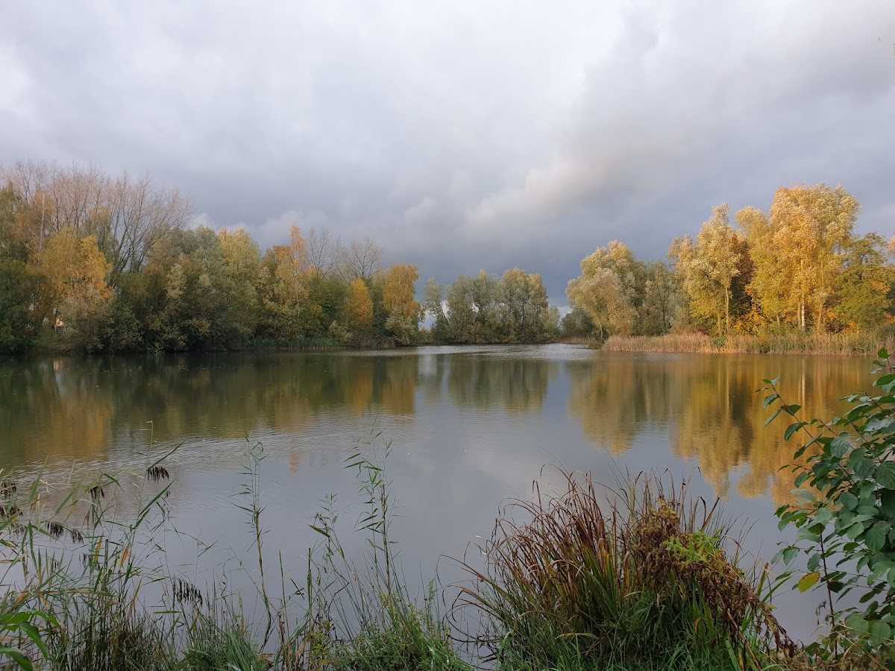
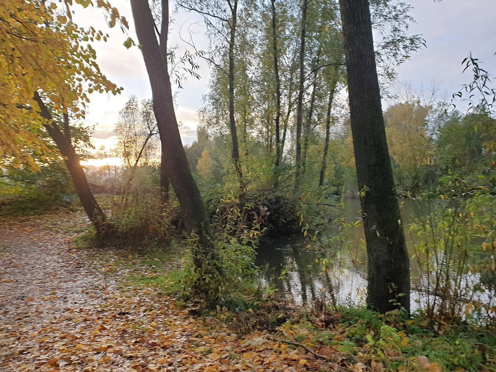

Het Jachtmeer
Een klein eilandje van rust, vlakbij de stad. Wandelen, vissen en schaatsen in het hart van Oss.
Een klein eilandje van rust, vlakbij de stad. Wandelen, vissen en schaatsen in het hart van Oss.
Het Jachtmeer biedt het hele jaar door mogelijkheden om te genieten van de natuur.
Een populaire visplek waar je heerlijk aan de waterkant kunt zitten. Geniet van de rust en de natuur.
Meer info →Bij strenge vorst verandert het meer in een prachtige natuurijsbaan. Een winters avontuur midden in Oss.
Meer info →Een route van circa 3 kilometer langs kronkelende waterlopen, rietvelden en prachtige bomen. Honden welkom.
Het Jachtmeer ligt in de duurzaam gebouwde wijk Mettegeupel in Oss. Het is een waterrijk natuurgebied met een brede kronkelende waterloop tussen rietvelden, een grote plas omzoomd door mooie bomen, en een prachtig stukje poldergebied.
Het gebied kent een geleidelijke overgang van ecologisch openbaar groen naar privétuinen. Door het maaibeleid wordt de bodem steeds schraler, waardoor er steeds meer zeldzame planten en dieren verschijnen.
Van hoog opgeschoten begroeiing tot weidse vergezichten over water en weilanden — er valt altijd iets te ontdekken.

"Een klein eilandje van rust, vlakbij de stad. Om te vissen of gewoon een wandeling te maken."
— Stefan D.
"Je kan er best een aardig rondje lopen met de hond. Bij regenachtig weer vrij modderig."
— Daniella T.
"Mooi wandelen. De wijk Harnas mooi gelegen aan het jachtmeer, omsloten door kleine waterpartijen."
— Chris v.B.
Beelden van het natuurgebied door het jaar heen.



Het natuurgebied is 24 uur per dag toegankelijk. Gratis entree. Honden welkom.
Bekijk de route